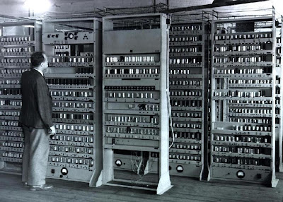
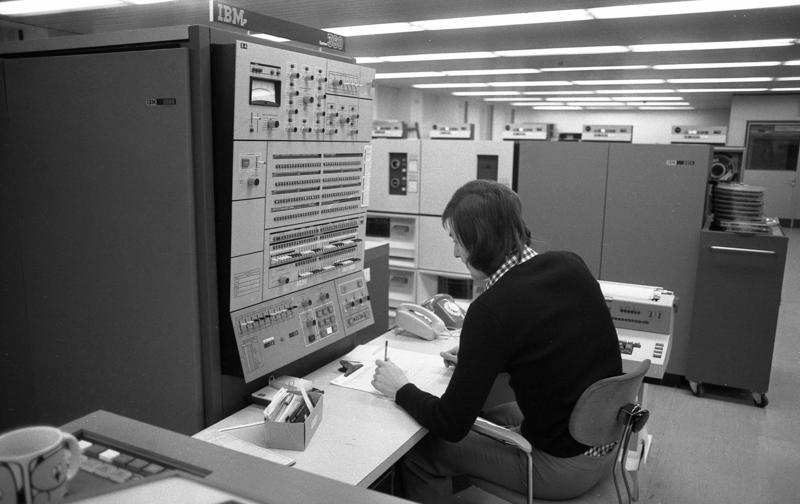
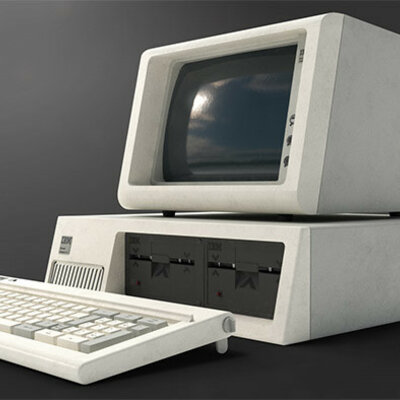
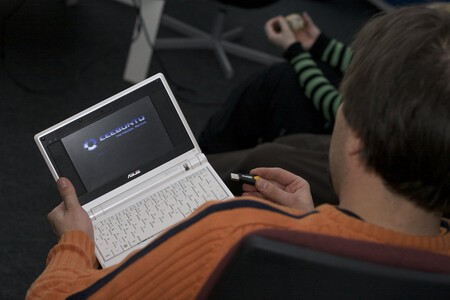

Origen

La informática, como disciplina, se originó en la primera mitad del siglo XX. Su desarrollo se debe a la necesidad de realizar cálculos complejos y manejar grandes cantidades de información.
Décadas de 1940 y 1950
Durante esta época, se desarrollaron las primeras computadoras electrónicas. Entre ellas, la ENIAC (Electronic Numerical Integrator and Computer) y la UNIVAC (UNIVersal Automatic Computer).
Décadas de 1960 y 1970
En estas décadas, la informática empezó a avanzar rápidamente. Surgieron los primeros sistemas operativos y lenguajes de programación como COBOL y FORTRAN. También se desarrollaron las primeras redes de computadoras.
Décadas de 1980 y 1990
En los años 80 y 90, la informática se convirtió en una parte esencial de la vida cotidiana. Aparecieron las computadoras personales y las primeras versiones de internet. Surgieron empresas como Microsoft y Apple.
Siglo XXI
En el siglo XXI, la informática ha evolucionado aún más con el desarrollo de tecnologías como la inteligencia artificial, la computación en la nube y el internet de las cosas. La informática sigue siendo un campo en constante evolución y cada vez más presente en todos los aspectos de la vida moderna.